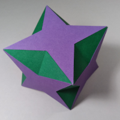

For optimal experience Javascript should be enabled.
This page is under construction.
In March 2021 George Hart posted a video about the Sharpohedron. That name he coined because it was mentioned by Abraham Sharp at the end of the 17th century. I forwarded the linkt to the video to Don Romano and he guickly built a model. He also constructed a model of a compound of two of these as shown in the picture below.

It reminded him of Wenninger's number 70 consisting of pentagrams and triangles. I noticed that the three green triangles around one side of a 3-fold axis didn't really lie in one plane. If you would truncate more from this model to get the triplet of crosses to lie in one plane you would get a Stella Octangula. Besides the problem with the triangles, the purple faces weren't really "tetragrams", since these would be crosses with infinite legs. Therefore I decided to start with crosses consisting of 5 squares (instead of infinite legs) and I quickly found a polyhedron that was more similar to Wenninger's #70.
I liked the result, it was quite a simple and charming polyhedron. Shortly after it was named Swissohedron since it reminded me of a Swiss flag, but I couldn't imagine I would be the first to have stumbled on this one and I decided to ask on the Stella Forum, where Ulrich Mikloweit answered that it could be found on page 41 of Wenzel Jamnitzer‘s Perspectiva Corporum Regularium from 1568. In fact you could even found the compound of the two Sharpohedra there on another page. One might wonder whether we were thinking in the same lines when deriving these.
After mentioning this on the forum, together with Ulrich and Don we found some more polyhedra with crosses, which we called crossohedra by lack of any better name. I wouldn't be surprised if others have looked at this area before us, though. This page contains some models of the crossohedra that we found.
If you would loosely define a crossohedron any polyhedron with crosses and you think of a cross as consisting of 5 quadrilaterals, then we only concentrated us on orthogonal crosses with the following properties:
Note though that I don't want to force the interpretation of the cross here. You can either see the cross as consisting of two intersecting rectangles or as a concave equilateral dodecagon (which is equivalent as 5 planar squares). In the former there are 4 short edges and 4 long edges to be connected, in the latter there are 12 edges to be connected. We will not consider the cross as consiting of one rectangle and 2 squares (all disconnected).
Below follows a list of model found by Don Romano, Ulrich Mikloweit and Marcel Tünnissen.
The table below shows crossohedra consisting of crosses that consist of five squares.
| Description | Model |
| Totally deflated version of a Swissohedron, where two crosses are merged into one. This is closely related to Steward's 4Q3(S3) used in Chapter VI of [BStew01] |
The table below shows crossohedra consisting of elongated crosses. Only one kind is accepted: there where two opposite legs constist of square that are congruent to the one in the centre and the other opposite legs are congruent rectangles.
| Description | Model |
| Partly elongated inflated Swissohedron | |
| Standard version, where one pair of legs for each cross of the inflated Swissohedron is extended until the hexagon becomes a triangle. | |
| 'A' partly faceted version (at triangles) | |
| 'B' partly faceted version (at hexagons) | |
| Faceted version (both at triangles and hexagons), semi-toxihedron |
The table below shows crossohedra consisting of crosses that consist of five squares.
| With crosses on 4-fold axes | Model |
| Crosses connected to 2-fold axes | |
| A standard version | |
| Trivial deflated version. A similar one can be found in Brückner 1900, Plate VII, Figure 29. | |
| Alternative deflated version. | |
| Inflated version. | |
| Crosses connected to 3-fold axes (Swissohedron family) | |
| Swissohedron. Also listed by Jamnitzer, Wenzel 1568. A similar model can be made with the cross officialy used for the Swiss flag. | |
| A faceted version of the Swissohedron. Note that the kernel is a Stella Octangula. | |
| 'A' partly faceted version of the Swissohedron. To be a valid polyhedron with intersecting hexagons the hexagons should be self-intersecting hexagons, not to leave any loose edges, | |
| 'B' partly faceted version of the Swissohedron. Another partly faceted version of the Swissohedron. To be a valid polyhedron with intersecting hexagons, the hexagons should be self-intersecting hexagons, not to leave any loose edges. | |
| Totally faceted Swissohedron, so much that all crosses are gone. Technically this isn't a crossohedron. It is only added to give this intesting one a place. | |
| Inflated Swissohedron. The blue intersecting faces are isosceles hexagons, however you can also interprete the polyhedron as consisting of concave dodecagons (the crosses) and regular hexagons, where the blue ones are folded hexagons. | |
| Faceted inflated Swissohedron; aka toxihedron, because it reminds me of the radioactivity warning when you look into a 3-fold axis. | |
| Deflated Swissohedron version 'A' | |
| Deflated Swissohedron version 'B' | |
| Snub version of the Swissohedron. |
| With crosses on 2-fold axes | Model |
| Crosses connected to the 3-fold axes | |
| Basic version | |
| Faceted at 3-fold axes. | |
| Faceted at 4-fold axes. | |
| Faceted at both 3-fold and 4-fold axes. | |
| Crosses connected to the 4-fold axes | |
| A faceted version | |
| A crossohedron with crosses on 2-fold axes in rotated fashion. |
| With crosses on 2-fold and 4-fold axes | Model |
| A crossohedron with crosses on 2-fold and 4-fold axes. | |
| A faceted crossohedron with crosses on 2-fold and 4-fold axes. | |
| A Faceted Augmented Truncted Cuboctahedron |
The table below shows crossohedra consisting of elongated crosses. Only one kind is accepted: there where two opposite legs constist of square that are congruent to the one in the centre and the other opposite legs are congruent rectangles.
| Description | Model |
| Elongated crossohedron with crosses on 2-fold axes. | |
| Standard version. | |
| Partly faceted: at 4-fold axis | |
| Partly faceted: at 3-fold axis | |
| Faceted at version | |
| Elongated crossohedron with crosses on 2-fold axes and 4-fold axes. |
The table below shows crossohedra consisting of crosses that consist of five squares.
| More Info | Model |
| Faceted Crosohedron with crosses connected to the 3-fold axes. Faceting is done at the 3-fold axis orthogonally to a 5-fold so that isosceles decagons are obtained. | |
| Faceted Crosohedron with crosses connected to the 3-fold axes. Faceting is done at the 3-fold axis and the 5-fold axis in both cases orthogonally to a 5-fold axis. In both cases isosceles decagons are obtained. | |
| Faceted Crosohedron with crosses connected to the 3-fold axes. Faceting s done both at thet 3-fold and the 5-fold axes. The faceting at the 3-fold axis is done orthogonally to the a 5 fold axis, which leads to isosceles decagons and faceting that the 5-fold axes is done orthogonally to a 3-fold axis so that isosceles hexagons are obtained. | |
| Inflated crossohedron with crosses connected to the 3-fold axes. |
The table below shows crossohedra consisting of elongated crosses. Only one kind is accepted: there where two opposite legs constist of square that are congruent to the one in the centre and the other opposite legs are congruent rectangles.
| Description | Model |
| Elongated crossohedron with crosses on 2-fold axes. |
The table below shows crossohedra consisting of crosses that consist of five squares with crosses on 4-fold axes
| More Info | Model |
| Trivial D4xI crossohedron with crosses on the 4-fold axis. Commonly used in logos, e.g. on this C++ website. On could think of the polyhedron as consisting of crosses and squares, or as having crosses, squares and intersecting rectangles. The height of this polyhedron can be increased to make the latter into squares. | |
| Double crossed crossohedron with crosses on the 2-fold axis (with D2xI symmetry). | |
| Double crossed crossohedron with crosses on the 4-fold axis (isogonal polyhedron with D4C4 symmetry) | |
| Crossed crossohedron with crosses on the 4-fold axis. This is an isogonal polyhedron with 2 different edge lengths. | |
| Crossolated gyrobifastigium; derived from Johnson solid J26. It has D4D2 symmetry with cosses on the reflection planes. It consists of two {3}-long-connected crosses from one of the tables below. |
There exists an infinite series of crossohedra with prism symmetry and crosses on 2-fold axes where the shorter edges meet in a {n/m} while the longer edges meet in a {n/k}, while for m and k hold 1 ≥ k, m ≥ mmax, k > m and n ≥ 5. Note that {n/1} = {n}
If any {n/m} is considered with n ≥ 5 and m = mmax where mmax = n+1/2 if n odd or mmax = n-2/2 if n even. If n is even then the faces are parallel and the extra faces will not change.
If n is odd then the length of one pair of the longer edges can be adjusted so that one can use squares at the end. For any valid values of m < mmax the length of those edges can be adjusted to a {n/k} with k > m.
Exceptions are cases where the opposite legs of the crosses need to be shortened to length 0 or less, e.g. in case of {8/3}.
Examples are given below. The name {n/m}-to-{n/k} is used the the former specifies how the short edges meet and the latter how the long edges meet.
The other legs of the crosses could also be extend, or one could allow for different widths, but only one kind is accepted: there where two opposite legs constist of square that are congruent to the one in the centre and the other opposite legs are congruent rectangles. Note that one could extend all the other legs to the same length as the other legs instead. To allow this, the requirements that are listed above need to be adjusted. For this reason I chose to keep those squares, but just to show an example: the "{5}-to-{5/2} could also be presented like instead.
| Description | Model |
| Infinite series with crosses on 2-fold axes | |
| {3} expanded | |
| {4} expanded | |
| {5}-to-{5/2} | |
| {5/2} expanded (i.e. n is odd and m = mmax) | |
| {6}-to-{6/2}. Note that the crosses aren't elongated. (also a compound of 3 long connected crosses) | |
| {6/2} expanded (i.e. n is even and m = mmax). Note that the crosses aren't elongated. | |
| {7}-to-{7/2} | |
| {7}-to-{7/3} | |
| {7/2}-to-{7/3} | |
| {8/2}-to-{8/3} | |
| Etcetera | |
| Finite series with crosses on reflection planes | |
| Crossolated triangular orthobicupola; derived from Johnson solid J27 | |
| Crossolated square orthobicupolal; derived from Johnson solid J28 | |
| Crossolated pentagonal orthobicupola; derived from Johnson solid J30 |
Some of the one from the infinite series can be faceted, e.g. Besides that, more of the polyhedra shown in the table above can be expanded, e.g. the {5}-to-{5/2}, {6}-to-{6/2}, {7}-to-{7/3}, {7/2}-to-{7/3} and {8/2}-to-{8/3} can be further expanded. These cases aren't shown here.
It is also possible to connect the long edges in the mid-section of the prisms and form {n/m} and then adjust the top and bottom part. There isosceles {2n/k} polygons are obtained and an additional n rectangles are needed to fill the gaps. One can use crosses consisting of 5 squares, or one can choose to adjust the length of the two opposite legs of the cross to fill the gaps at the top and the bottom with squares instead. Compare with for example. In the table below I chose to keep the crosses regular.
Note for the {6/2} long-connected crosses no addition squares are needed and this one is part of the table above.
| Description | Model |
| Another infinite series with crosses on 2-fold axes | |
| {3} long-connected crosses. | |
| {4} long-connected crosses. | |
| {5} long-connected crosses. | |
| {5/2} long-connected crosses. | |
| {7/2} long-connected crosses. | |
| {7/3} long-connected crosses. | |
| Etcetera |
Some of these can be faceted, e.g.
Another option would have been to adjust the width of the vertical legs of the crosses so that the there is no need fo the extra faces at all. However these crossohedra aren't part of this listing as mentioned above since it was required to keep the quadrilateral in the centre a square.
The table below summarises the crossohedra with cyclic based symmetry.
| Description | Model |
| Cross-to-vertex. a pyramid with a cross as base | |
| Cross-to-edge. This one looks like the roof of a church; it is a cross at the base and two edges at the top. It can also be seen as a compound of 2 triangular prisms. Variants of this one exists: one can decrease the height and keep the triangle equilateral by folding them in or out. In that case the rectangles will become isosceles trapezia. | |
| Cross-to-square. Where the pyramid has a vertex at the top, this one has a square at the top. The cross at the bottom should be seen as a concave dodecagon, i.e. this polyhedron doesn't consist of trapezia, since in that case a rectangle and a trapezium and the square would share one edge. | |
| Faceted cross-to-square. In contrast to the non-faceted version, this one does consist of trapezia and the cross should be seen as two rectangles. | |
| Finite series with crosses on reflection planes | |
| Crossolated triangular cupola; derived from Johnson solid J3 | |
| Crossolated square cupola; derived from Johnson solid J4 | |
| Crossolated pentagonal cupola; derived from Johnson solid J5 |
Some of the polyhedra can be turned into toroids. No serious effort to explore this area has been taken here and the listing here just holds some examples that looked interesting. So far no toroids were found that only consisted of regular faces, i.e. that might belong to Steward's toroids ([BStew01]), with the exception of the aplanar rule for the crosses only (i.e. a cross is considered to consist of five co-planar squares).
The table below shows some toroids. Variants of these with different genus can be made. The toroids below have irregular parts. One can choose where to place this irregularity. For instance one can put it in the kernel, the tunnels, or at the outside (the crosses). Here it was chosen to put it in the tunnels.
| Description | Model | Internal Model |
| Toroidal Swissohedra | ||
| Octahedron kernel and genus 7. | ||
|
Cuboctahedron kernel and genus 7.
The tunnels are made of triangular prisms with a edge ratio 1:√3. |
||
|
Rhombicuboctahedron kernel and genus 7.
The tunnels are made of octahedra with a edge ratio of 1:2/√(15-8√2) ~= 1:1.04. |
||
| 4-fold crown toro crosso. If you release the aplanar rule for Steward's toroids for all faces then this would be part of that set, since the rhombs consist of equilateral triangles (and the crosses of squares). | N.A. |
The table below summarises some helical crossohedra. Note that some of these aren't completely closed, since they continue in eternity.
| Description | Model |
| A basic infinite series of helical crossohedra around an n-fold axis. It can be seen as interconnected 3D plus-signs (with D4xI symmetry). At least two variants exist: A and B. They differ in how the inner turn of the helix is defined. | |
| For n=4 (variant A and B are the same) | |
| For n=6 (variant A) | |
| For n=7 (variant B) | |
| For n=11 (variant B) | |
| An infinite series of helical crossohedra around an n-fold axis with crossed heptagons | |
| For n=4 | |
| For n=6 |
Thanks George Hart for providing an inspirational video. Thanks to Don Romano for early exchange of ideas. Thanks Ulrich Mikloweit for helping out and providing some OFF files. Thanks to Robert Webb for Stella, which Ulrich used to derive some OFF models.
2021-04-01
2021-04-26